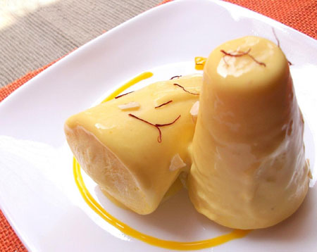

Ingredients
1.Condensed milk-1 can (14oz)
2.Evalporated milk-1 can (12oz)
3.Heavy whipping cream-1 can (16oz)
4.Cool whip-1 box (16oz)
5.Safforn strings - little ( crushed with little sugar)
6.Cardamon - 8 (crushed)
7.Pistachios,Almonds ,Cahews -1/2 cup (Crushed)
To store the kulfi
1.Plastic small cups(kid size) / Muffin cups
2.Ice cream sticks
Method
1.Blend all the ingredients above with hand mixer
2.Place the mixed kulfi in plastic cups/muffin cups/kulfi molds and insert plastic ice cream sticks.
3.If you dont have plastic cups place it in a large bowl and cover it.
4.Freeze it for atleast 6 hours until kulfi is firm .
5.Enjoy yummy kulfi for summer.